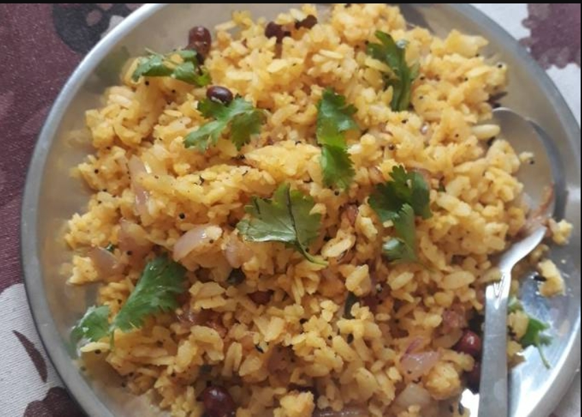

Poha recipe
Well there are many types of them but we'll learn to make the most common and easiest one which is masala poha.
For recipe of other types to poha check out 12 Authentic Poha Recipe across India.
Masala Poha
Ingredients
- 2 cups Poha (Flattened rice)
- 1 cup Onion , finely chopped
- 3/4 cup Fresh coconut, grated
- 4 teaspoons Sugar
- 1 teaspoon Red Chilli powder
- 1-1/2 teaspoons Coriander Powder (Dhania)
- 1 teaspoon Cumin powder (Jeera)
- Salt, according to your taste
Steps
- We make Masala Pohe Recipe by soaking the thick pohe in a bowl with sufficient water for about half a minute and immediately drain and squeeze dry.
- In a mixing bowl, mix together all the above mentioned ingredients except the ones for tempering.
- Check seasoning and sweetness. Add more sugar if desired.
- In the meantime heat a piece of charcoal over direct flame till red ambers are visible. Remove from flame and place in a small bowl which should be kept in the centre of pohe. This is the smoking method and this imparts a unique smoky and earthy flavour to the pohe. Our a few drops of oil over it and shut the pohe with a lid tightly for a minute.
- This imparts a unique smoky flavour to the pohe.
- After the smoking is done, heat oil in a small kadai and add the mustard seeds. When they splutter, add the asafoetida and the turmeric powder.
- Switch off the heat and pour the tempering over the prepared masala pohe. Mix well. This step is optional. Adding it will just bring in more flavour to the poha.
- Serve Masala Pohe Recipe along with Adrak Chai Recipe (Indian Style Ginger Tea ) during tea time. You can garnish it with sev or chivda to make it more appetizing.
Now enjoy your meal!
